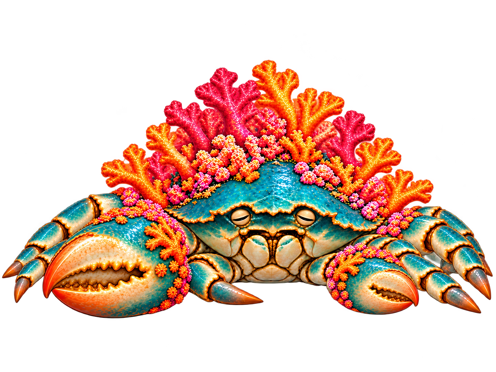

Draft poses. Death lowers the shell onto folded legs and holds the final frame. Rigid shell and claw volume still need correction.
Attack reads as a raised claw closing, with limited forward reach. Death now uses a separate full-volume endpoint; the preceding collapse still needs matching shell and claw proportions. Folded feet remain partly concealed.
Reference comparison · Scuttle study · Source sheet

Fuller shell and large claw, but the outer left foot reaches the source boundary, hidden legs remain ambiguous and closed eyes gain a new shape. Needs repair before replacing the sequence endpoint.